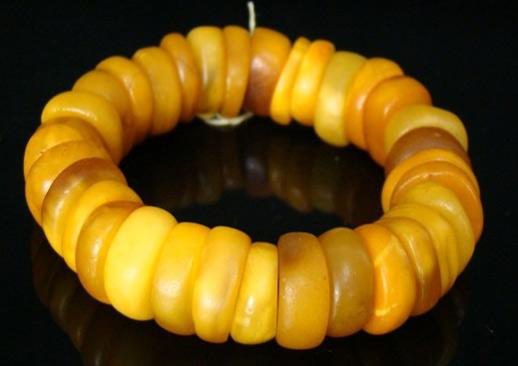

-
后李文化
后李
作者：王海玉 -
青州龙兴寺佛像窖藏
佛像
作者：肖贵田 -
 东汉西王母、牛羊车画像石
东汉西王母、牛羊车画像石画像
作者：肖贵田 -
济南神通寺
寺
作者：肖贵田 -
沂南北寨汉墓
汉墓
作者：肖贵田 -
北辛文化
北辛
作者：王海玉 -
大汶口文化
大汶口
作者：王海玉 -
龙山文化
龙山
作者：王海玉 -
翡翠花瓶吊坠有什么寓意
吊坠
作者：滕卫 -

古老而神秘的珠宝收藏品蜜蜡
珠宝
作者：滕卫 -
雍正最爱单色釉：爱恬静的气质...
色釉
作者：滕卫 -
齐刀币
币
作者：钟宁 -
趣谈明代穿衣规矩
穿衣
作者：钟宁 -
 中国古代漆器
中国古代漆器漆器
作者：钟宁 -
 中国古代梅瓶赏析
中国古代梅瓶赏析梅瓶
作者：钟宁 -
中国古代发饰赏析
发饰
作者：钟宁 -
古籍善本的类型
善本
作者：徐战 -
古籍中的套印本
套印本
作者：徐战 -
书画常用印章解读
印章
作者：徐战 -
印章、拓印、印染与雕版印刷
印章、印刷
作者：徐战 -
 中国画用纸
中国画用纸画纸
作者：徐战 -
中国古书画鉴定知识：纸绢和装裱...
画纸
作者：徐战